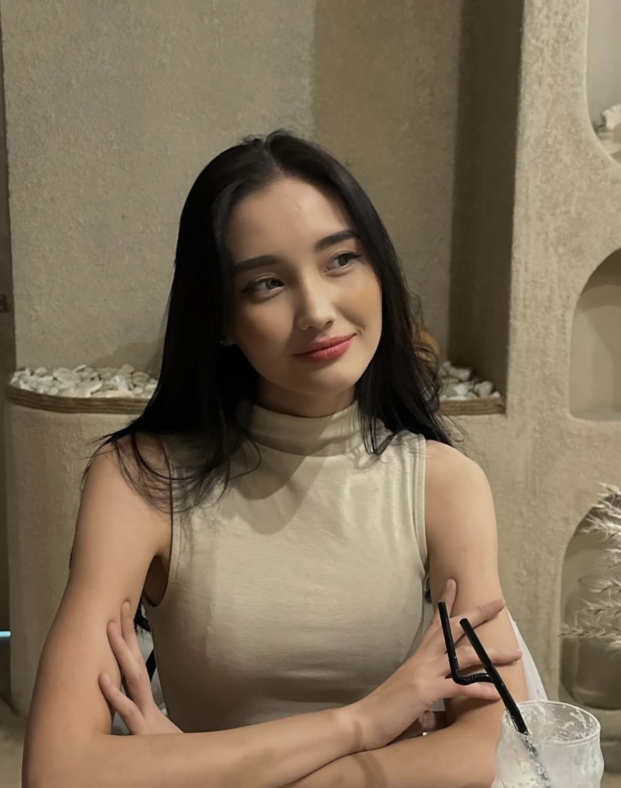
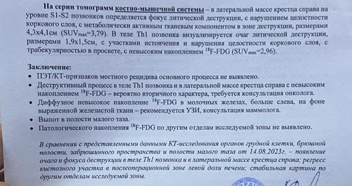
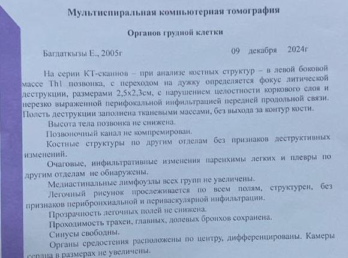
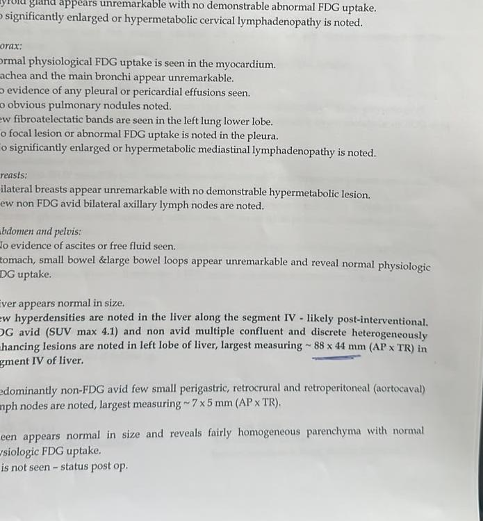
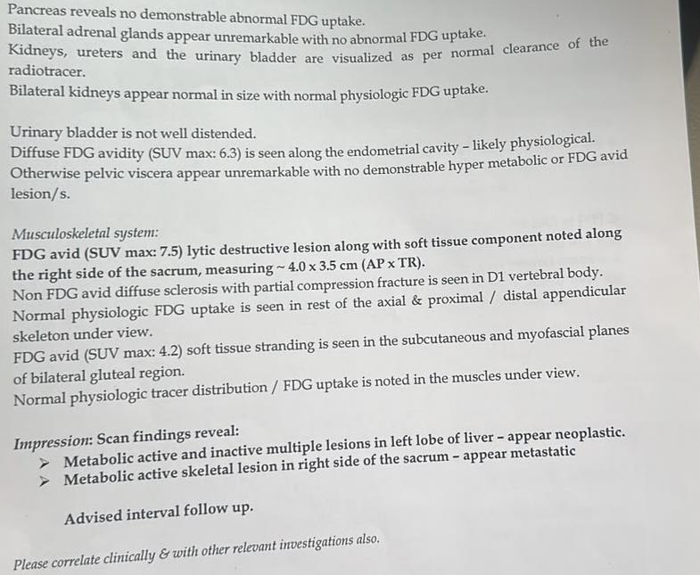
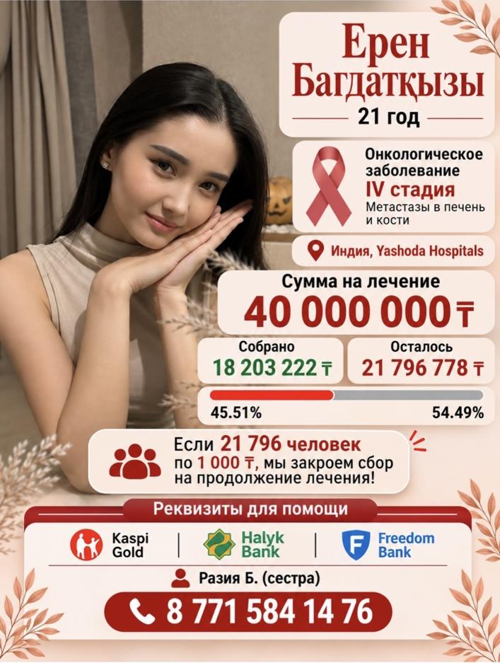

Ерен Багдаткызы, 21 год
Гепатоцеллюлярная карцинома печени с поражением костей. Лечение в Индии, Yashoda Hospitals.
Поддержать ЕренСбор средств
Цель сбора40 000 000 ₸
45,51% собрано
Реквизиты для помощи
Kaspi Gold · Halyk Bank · Freedom Bank
Получатель: Разия Б. (сестра)
8 771 584 14 76
Перед переводом проверьте имя получателя в банковском приложении. Спасибо за любую поддержку!
История болезни
В мае 2023 года Ерен перенесла частичную резекцию печени. Гистологическое исследование подтвердило гепатоцеллюлярную карциному. В декабре 2024 года обследования выявили изменения в крестце и первом грудном позвонке, подозрительные на метастазы. По заключению ПЭТ/КТ от 8 августа 2026 года выявлены множественные опухолевые очаги в печени и активный очаг в крестце, расцененный как вероятный метастаз.
Медицинские документы
Выдержки из обследований. Персональные данные в верхних частях страниц не публикуются.
ПЭТ/КТ и КТ — декабрь 2024


ПЭТ/КТ — 8 августа 2026, Индия


Фотоотчёт сбора
